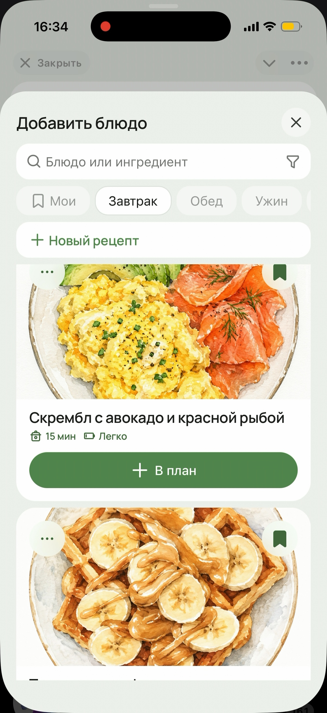

Yasmy: from saved recipes to a ready-made meal plan
I researched meal planning, designed the user flows and interface, and worked with my partner to bring the Telegram Mini App and bot to a beta with its first users.
Open Yasmy in TelegramAbout the project

About the product
Yasmy suggests a meal plan and turns it into a shopping list. The goal is to help answer the daily question “What should I cook?” without making people plan from scratch every time.
The Telegram Mini App and bot connect a meal plan, recipe library, and shopping list. Users can add their own recipes through the bot.
Shared access and the subscription shown on the cover are planned next. Neither is available in the working beta yet.
My role
Yasmy is a side project that my partner and I build in the evenings and on weekends without outside funding.
Research and product strategy. I ran a survey and interviews and studied how people currently plan meals. The findings shifted the focus from a recipe library to a suggested menu.
Design and development. I own the information architecture, UX/UI, and frontend development with Codex across meal planning, recipes, and shopping. I also sometimes work on the backend.
My partner's work. He leads backend development, deployment, and server maintenance, including operations and hosting costs.
Context
The idea came from a personal problem. When we ran out of food, we had to choose meals again, find recipes, discuss the menu together, and write a shopping list.
I wanted the product to feel reassuring: a decision has already been made, but you can change it. The name Yasmy is short and gentle, and in Russian it echoes the word for “clear.”
Initial concept
At first, I imagined a recipe library with a menu planner. Early wireframes followed a simple flow:
- 01save a recipe
- 02make a meal plan
- 03get a shopping list
In the survey, 35 of 50 selected participants said they did not know what to cook. I changed the starting point from an empty planner to a suggested menu that users could edit.
- 01see a suggested menu
- 02keep the dishes or edit the plan
- 03make a shopping list
Research
I wanted to see whether other people faced this problem and how they handled meal planning.
I ran the survey in January 2026, inviting people through chats, Instagram stories, and UX research communities. Of 69 respondents, I selected 50 close to the target audience. I invited those who had left contact details to interviews. This was a volunteer sample from channels available to me, not a random sample of everyone who cooks at home.
survey responses
I selected 50 people close to the target audience for further analysis: those who regularly cook at home and struggle with meal planning.
research interviews
We discussed how participants choose meals, plan cooking, and use existing tools. This was separate from the first interface tests.
Number of participants out of 50. Up to three answers were allowed.
Number of participants out of 50. Each person could give more than one answer.
Survey, January 2026. Selected responses from the target sample, N = 50; bar widths show each share of the 50 participants. Totals may exceed 50. The sample describes these participants, not how common the problem is among everyone.
“I've asked AI to make a menu for me several times because I want to eat a more varied, healthier diet. But then I forget and drop it.”
“I can spend an hour looking for recipes. Either the ingredients are expensive, the recipe is difficult, or it takes too long.”
“I often buy groceries when I'm in a good mood, then I don't have time to cook and they go bad.”
Existing alternatives
I tried meal-kit deliveries for several months, including Elementaree and Chefmarket. They add variety, but do not cover breakfasts, limit choice, and do not let me cook my favorite meals.
More often, people assemble their own system from search, social media, notes, and delivery services. Each tool helps with one stage, but the hardest question — what to cook — is still left to the person.
From observations to decisions
Start with a suggestion, not an empty plan
Observation. 35 of 50 selected survey participants said they did not know what to cook. I saw a problem that comes before saving a recipe.
Decision. I made a suggested menu the starting point. My hypothesis is that a ready-made suggestion can make choosing easier. Its effect still needs to be tested in use.
What to test. Can someone choose a suitable dinner without help, and how many substitutions do they need?
Let people change the menu
Observation. One interview participant said she gave up on weekly plans: by the planned day she wanted something else, or discounts and changes in her pantry affected the choice.
Decision. The suggested plan is editable. Automation gives people a starting point, not a fixed menu.
What to test. Do people understand how to change dishes and portions, and what happens to the rest of the plan?
Don't begin with manual recipe entry
Observation. Only 3 of 50 survey participants mentioned recipe apps. When I tried alternatives myself, I also stopped entering recipes after just two.
Decision. Adding a recipe through the bot became its own flow: users share a source instead of rewriting the recipe from scratch. My experience helped shape the idea, but cannot replace user testing.
What to test. Can people save their own recipes, find them in the library, and correct imported details when needed?
Product principles
I checked each decision against one question: does it reduce the actions and decisions required of the user?
- 01
A suggestion instead of a blank start
Yasmy selects dishes for the plan. If no suitable dish exists, leaving a meal empty is better than suggesting one that breaks dietary restrictions.
- 02
Personal recipes influence suggestions
Saved dishes get priority alongside other preferences. There is no fixed ratio of familiar to new recipes.
- 03
Less manual input
Users can send a recipe to the bot for import. Automatic extraction helps fill the library, though the result may need checking.
The menu is editable
Users start with a suggested menu. If a dish does not fit, they can remove it and pick another for the same meal without rebuilding the whole plan.
Filling gaps and rebuilding the plan are different actions. Automatic filling keeps dishes and portions already selected. A meal that the user deliberately removed should not return on its own.
Users can edit the plan. They can remove a dish, add another, and change portion counts. Rebuilding the entire menu also replaces manual edits, so it should not be described as simply filling empty slots.
A suitable recipe may not be found. In that case, the recommendation leaves the meal empty. The aim is to respect the user's restrictions, not fill the menu at any cost.

Importing a recipe from a link
Instead of entering a recipe manually, users send a link to the bot. After processing, they receive ingredients and steps in the chat, open the recipe in the Mini App, and can add it to a chosen day in the plan.
The bot indicates that it is processing the link, then sends the completed recipe.

More recipe actions
The bot message links to the original source and offers actions to open, edit, or add the recipe to a plan. In the editor, users can correct the name, cooking time, portions, and ingredients.


Shopping from the plan
After choosing dishes, users get a list of required groceries for the entire plan period, four days in this example. Items are grouped by category and can be checked off while shopping.
The new shopping design shown on the cover has not shipped. The working version is shown below.
Shopping in Telegram
The bot can send the list as a message. It keeps product categories together and includes a Mark all purchased action.
Beta and early observations
Yasmy is already in beta: we gave friends access and gained our first users. We are now building shared access for a partner or family. Subscriptions and payments come next, followed by a wider beta and metric checks.
Separately, I ran early informal tests with two participants, walking through the main product flows. They revealed issues with how people understood the interface, but cannot establish an effect across the broader audience.
What the first tests revealed
The plan period was unclear
Observation. One participant took a three-day plan to be a menu for today only because the period was not clearly shown.
Change. We added an onboarding question asking how many days the menu should cover. Users now set the period before their first plan. The plan itself still has no separate period label; another test will show whether the onboarding change is enough.
Shopping and meal plans do not always cover the same period
Observation. Participants described different needs: buying a little food for tomorrow or stocking up for longer. A list covering the whole plan did not always match the amount they expected to buy.
Change and limitation. We labeled the shopping list period, for example “Shopping for three days” when the plan covers three days. We did not add a separate shopping period selector: the list still covers the entire plan. The label explains current behavior, but does not solve the need for a smaller grocery trip.
Checking off an item should not move its row
Observation. In a test, checked-off items moved within the list, making them hard for a participant to track.
Change. We fixed the reordering: checking off an item no longer changes its position within its category.


Validation status. We have not retested these changes with participants yet. I use the app myself and check the fixes. I also found and fixed more shopping list bugs in daily use; that is a separate feedback source, not a finding from the first tests.
What I will test next
Full user testing is still ahead. I will check whether someone can choose a dinner from the suggested menu without guidance, change it, and prepare a shopping list. I will also ask how easy the decision felt.
For now, the project has a working beta and early interface observations. Whether it reduces decision time and mental effort remains to be tested.